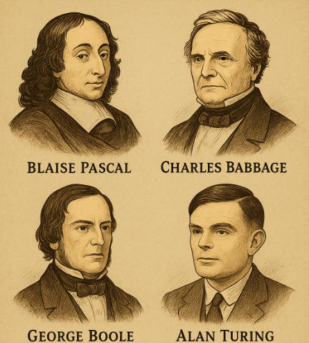
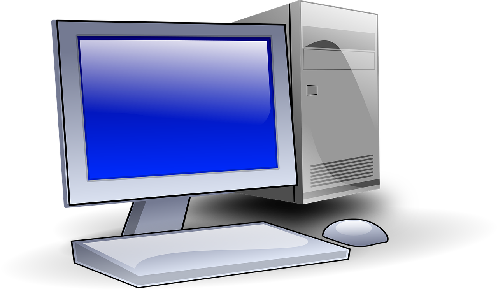
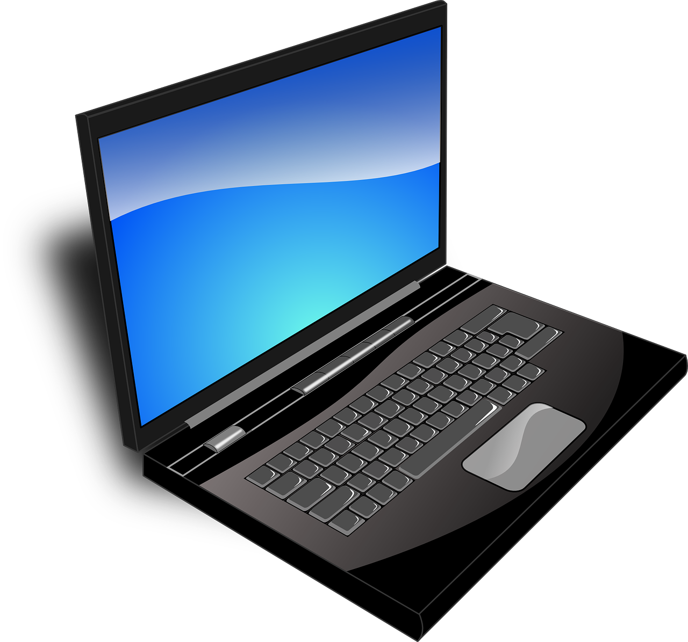
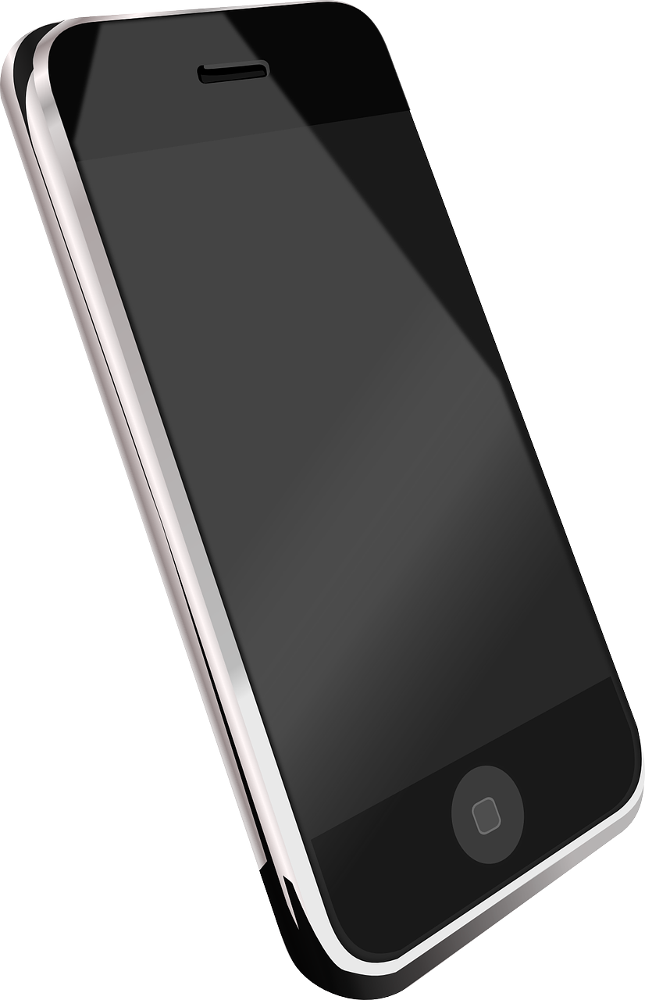
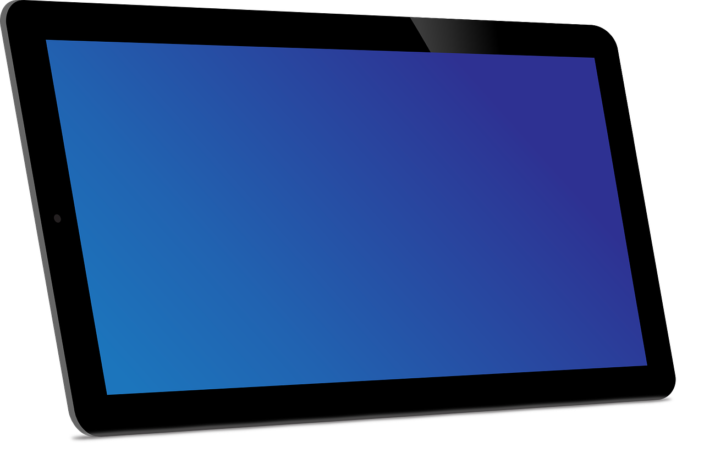
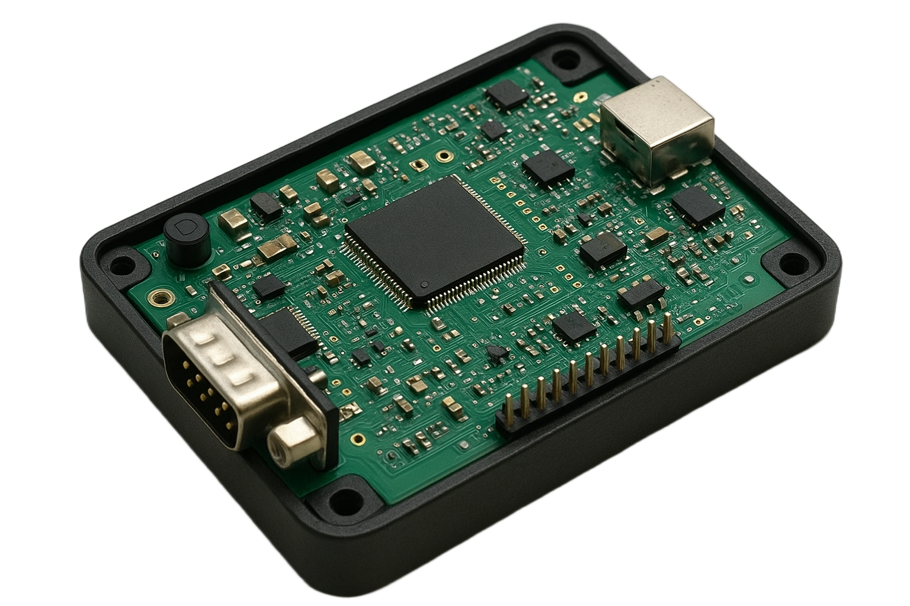

Introdução

A computação tem sua origem há milhares de anos, com instrumentos de cálculo primitivos, como o ábaco, utilizado para somar e subtrair. Ao longo dos séculos, surgiram avanços significativos: no século XVII, Blaise Pascal criou a primeira calculadora mecânica; no século XIX, Charles Babbage projetou a Máquina Analítica, considerada o primeiro conceito de computador programável, e George Boole desenvolveu a Álgebra Booleana, essencial para a lógica dos computadores e circuitos digitais. No século XX, Alan Turing, conhecido hoje como pai da Ciência da Computação, formalizou o conceito de máquina universal, estabelecendo os princípios teóricos da computação moderna. Com o surgimento de computadores eletrônicos, como o ENIAC, a tecnologia se tornou mais rápida, confiável e acessível, transformando profundamente a forma como trabalhamos, estudamos e nos comunicamos.  Com o avanço da era digital, o conhecimento sobre computadores tornou-se indispensável em praticamente todas as áreas da vida — no trabalho, nos estudos ou até mesmo para lazer. Desde a comunicação até o armazenamento de dados e o acesso à informação, os computadores desempenham um papel central. Essas ferramentas, cada vez mais integradas ao cotidiano, são essenciais para realizarmos tarefas de forma mais rápida, eficiente e conectada.
O que é um computador?
Um computador é uma máquina eletrônica capaz de receber, processar e armazenar dados. Ele realiza essas funções através de um conjunto de componentes físicos, chamados de Hardware, e programas, conhecidos como software.
- Hardware: Refere-se à parte física do computador, ou seja, as peças que o compõem, como o processador (CPU), a memória, os dispositivos de armazenamento (HDs, SSDs), e dispositivos de entrada/saída como teclado, monitor e mouse.
- Software: Conjunto de programas e sistemas que controlam o hardware e possibilitam a execução de tarefas. Exemplos incluem sistemas operacionais (como Windows e Linux), navegadores de internet, editores de texto, jogos e outros aplicativos.
Como funciona um computador:
- Entrada de dados: O usuário fornece dados e comandos ao computador através de dispositivos de entrada, como teclado, mouse ou microfone.
- Processamento: A CPU processa esses dados, realizando cálculos e lógicas de acordo com as instruções do software.
- Saída: O computador exibe ou reproduz o resultado do processamento através de dispositivos de saída, como o monitor, altifalantes ou impressora.
- Armazenamento: Os dados processados podem ser guardados para uso futuro em HDs e SSDs
Tipos de computadores:
- Desktops (Computadores de Mesa): Computadores fixos, geralmente mais potentes e expansíveis que notebooks. São ideais para tarefas que exigem maior desempenho, como jogos, edição de vídeos, programação e trabalhos de escritório. Por serem maiores e dependerem de conexão constante à energia elétrica, não são facilmente transportáveis. 
- Notebooks (Laptops): São compactos e fáceis de transportar, integrando teclado, tela e outros componentes em uma única peça, permitindo trabalhar ou estudar em qualquer lugar.
- Smartphones: Telefones inteligentes que combinam funções de comunicação, navegação na internet, fotos, vídeos e aplicativos. Além disso, são mais acessíveis e fáceis de usar.
- Tablets: Dispositivos móveis com tela sensível ao toque, representando uma opção intermediária entre smartphones e notebooks.
- Servidores: Computadores potentes responsáveis por armazenar e distribuir dados
para outros computadores, essenciais para a internet.

- Sistemas embarcados: Computadores dedicados a tarefas específicas dentro de outros dispositivos, como automóveis, eletrodomésticos e equipamentos médicos. 
Esse guia terá como foco computadores desktop e laptops.